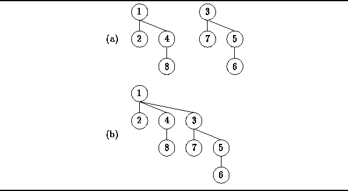
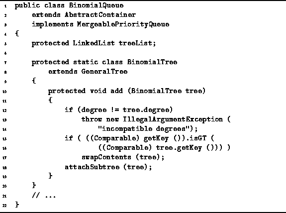
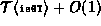

Data Structures and Algorithms
with Object-Oriented Design Patterns in Java
Data Structures and Algorithms
with Object-Oriented Design Patterns in Java
Recall that we can combine two binomial trees of the same order, say k,
into a single binomial tree of order k+1.
Each of the two trees to be combined is heap-ordered.
Since the smallest key is at the root of a heap-ordered tree,
we know that the root of the result must be the smaller
root of the two trees which are to be combined.
Therefore, to combine the two trees,
we simply attach the tree with the larger root
under the root of the tree with the smaller root.
For example,
Figure  illustrates how two heap-ordered binomial trees of order two
are combined into a single heap-ordered tree of order three.
illustrates how two heap-ordered binomial trees of order two
are combined into a single heap-ordered tree of order three.

Figure: Adding binomial trees.
The add method defined in Program
provides the means to combine two binomial trees of the same order.
The add method takes a BinomialTree
and attaches the specified tree to this node.
This is only permissible when both trees have the same order.

Program: BinomialTree class add method.
In order to ensure that the resulting binomial tree is heap ordered, the roots of the trees are compared. If necessary, the contents of the nodes are exchanged using swapContents (lines 15-16) before the subtree is attached (line 17). Assuming swapContents and attachSubtree both run in constant time, the worst-case running time of the add method is . That is, exactly one comparison and a constant amount of additional work is needed to combine two binomial trees.
 Copyright © 1998 by Bruno R. Preiss, P.Eng. All rights reserved.
Copyright © 1998 by Bruno R. Preiss, P.Eng. All rights reserved.